Run Executions
Note
- Run Executions by selecting them
- Partial runs of executions are possible
- You can also run executions via the commandline
graph TB
A[component-example_0.1.0 + parameters + port mappings + secret files]
B[travel_dashboard_0.2.1 + parameters + port mappings + secret files]
A --> B;Go to the tab "Execution Run".
Select an Execution for Run
Select a new execution for a run and you will see how it has been set up in each step:
- parameters
- port mappings
- secret files
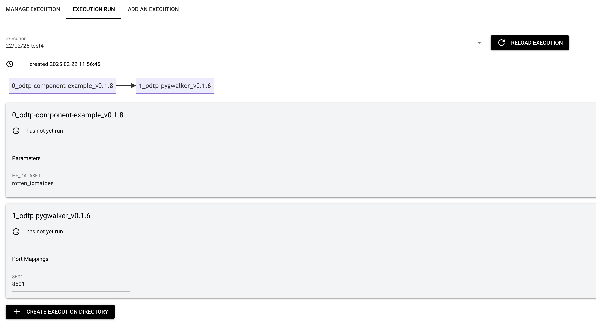
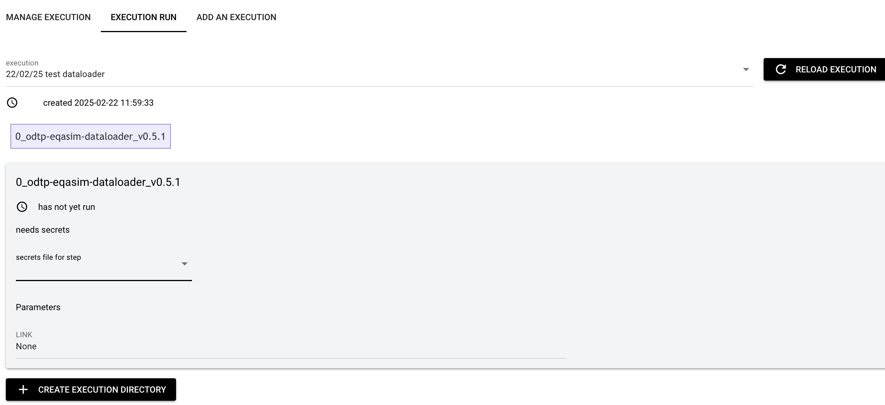
Step 1: Adapt Configuration
You can still overwrite the configuration:
Overwrite Parameter Values
You can overwrite the parameter values, but not upload parameters from file as when an execution is created
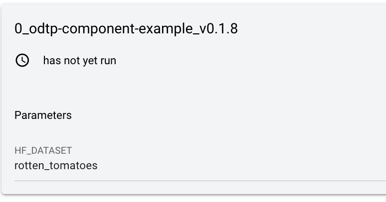
Overwrite Port Mappings
You can overwrite port mappings
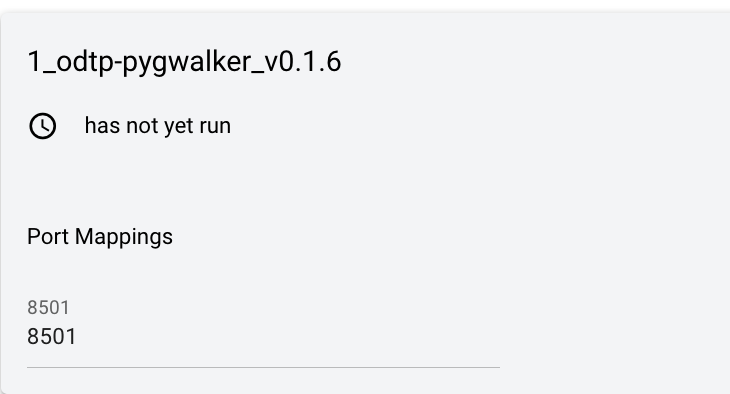
Select Secrets Files
You can select files with the secrets that the step need similar to when the execution is created
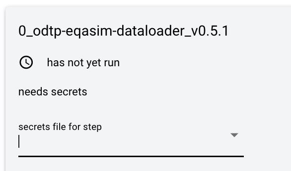
Step 3: Create Execution Directory
Next you need to create an execution directory by clicking on the button at the bottom of the page: "Create Project Directory"
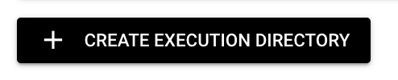
You will see a new button "Prepare Execution" appear.
Step 4: Prepare the Execution
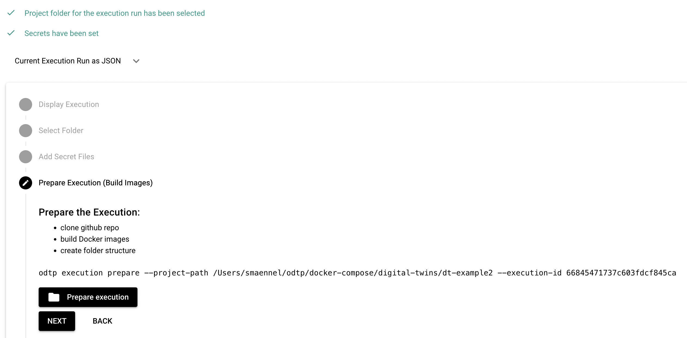
Click on the button and it will start to build the images. When possible previously build images will be reused. You will see the terminal output in a window.
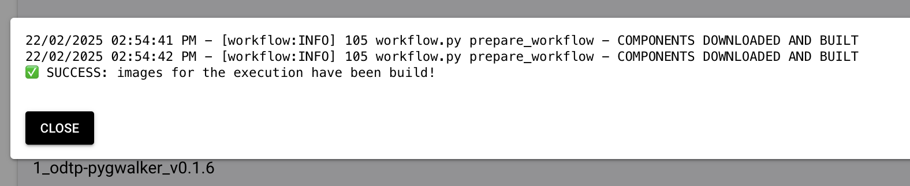
Once the images have been build you will see a new button "Run execution" appear.
Step 5: Run Execution
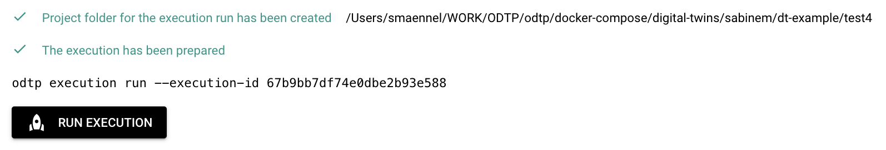
Again you will see the terminal output in a window: in the example below the component run failed.
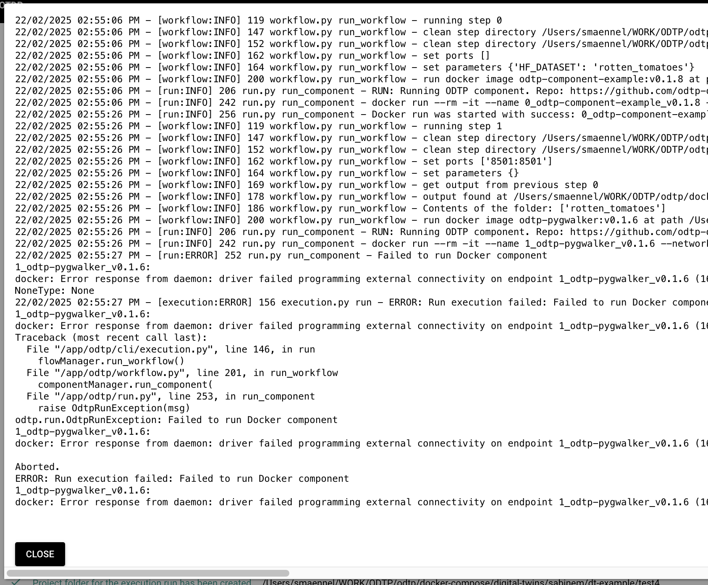
Once you close the terminal window, you will also be able to see the error on the execution run page.
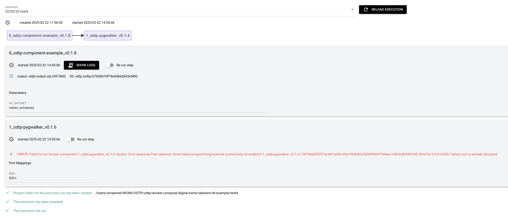 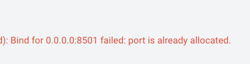
Step 6 (Optional) Rerun a Step
In case a Step failed to run you can make correction and switch a flag to rerun the Step.
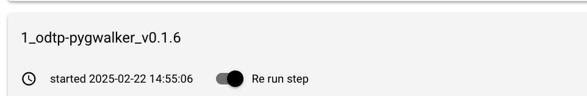 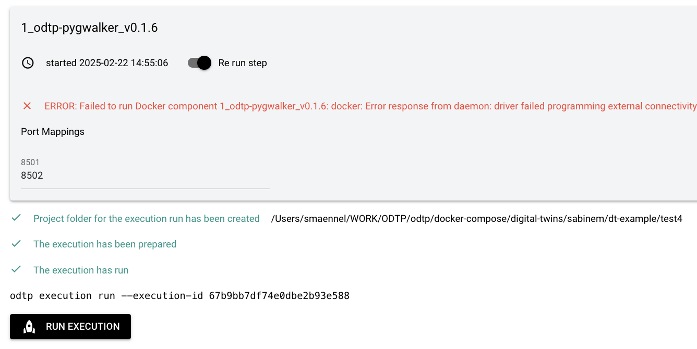 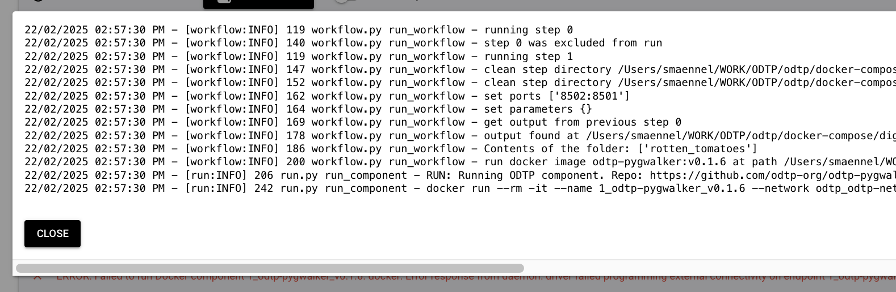
Interactive Components stay running, so in that case you won't see a success message in the terminal output window. You may also take a look on docker to see what is happening:
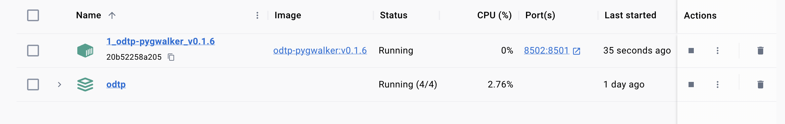
Since the Step is running as a container, we can close the Terminal output window and take a look on the page again:
Step 7 Check the logs
Each step may have a button to check the logs.
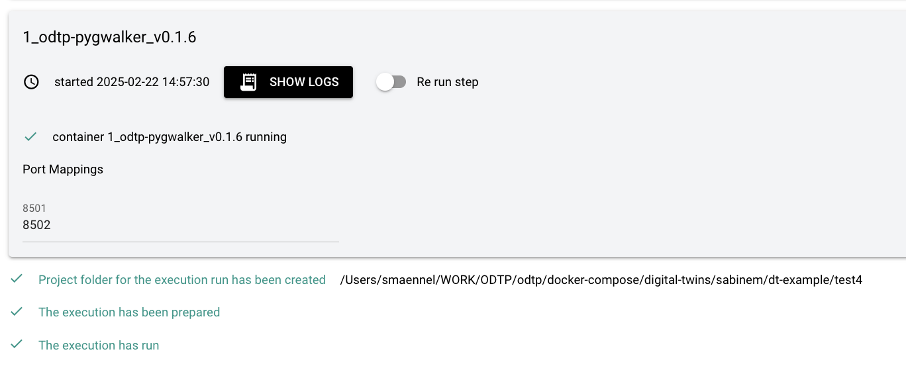
Typical log of an ephermeral Step: the Component ran and ended.
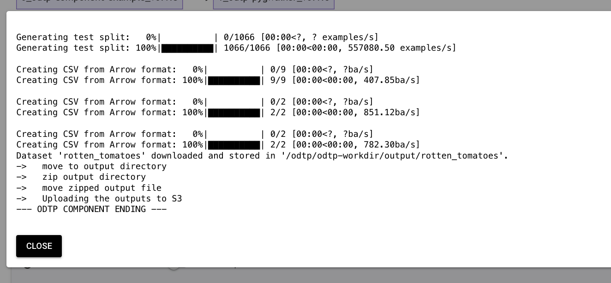
Typical log of an interactive Step: the application started and is served.
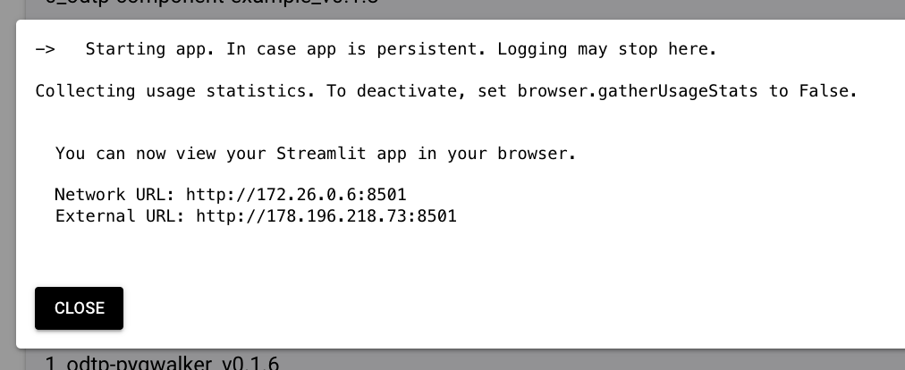